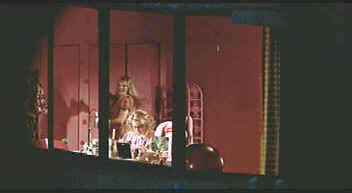

|
Dick(SE)/B+,A |
|
Columbia/1999/94m/ANA
1.85,FS 1.33 |
Dick's
inventive and often hilarious plot revolves around two ditzy
high school girls who inadvertently stumble into the Watergate burglary.
A second chance meeting with G. Gordon Liddy at a White House
tour leads to a remarkable relationship with the girls and the
Nixon government. Tricky Dick summons up all his charm over the
fair sex to make the girls Nixon fans. They even become the
official White House Dog Walkers. For those of you who liked
Romy and Michelle's High School Reunion, Dick will tweak
your funny bone.
 |
| Dance
of the Watergate virgins. ©Columbia |
The hilarity does not stop at the White House, happily, but
reaches into the corridors of the Washington Post and down even
deeper to clandestine meetings in the night with a pair
determinedly dense reporters named Woodward and Bernstein.
The girls are high-stepping, giggly,
and gloriously bathed in a foggy haze of innocence.
Kirsten Dunst is fine as Betty and Michelle Williams has some
grand line reading as Arlene. But Dick really erupts when
Dan Hedaya is on screen. Hedaya does a unique Nixon, not too
long on imitation, but thorough in extracting the last ounce of
humor from every Nixon foible. Adding able support is Dave
Foley as Halderman and Saul Rubinek doing a dandy Henry
Kissinger.
Andrew Fleming has experience directing
teenage girls, but The Craft was not exactly high comedy.
Fleming shows a gift for comic pacing. Dick moves like a
missile launched from the White House.
Andrew Fleming
and
Dick is a gorgeous
DVD eye-candy . Within a few minutes you'll
forget you are watching video. The intense colors pop off the
screen and are well-controlled and defined. No fuzzy edges here.
Background details are kept in sharp focus, newspaper headlines
are comfortably read. Contrast ratio is outstanding. Bright
daylight scenes are alive with the warmth of the sun and
interiors have easy to view lighting. The darkest scenes provide
excellent shadow detail. You won't want to miss any of the
delicious dialog and it's transparently clear in the Dolby
Digital 5:1 encoding. The only thing that may drown out some of
the details is the sound of your own laughter.
|
The
Feature
Archive has articles ranging
from John
Ford to Blonde
Bimbos, The
Heistmasters, Akira
Kurosawa and Frank
Darabont.

Preston Sturges was Hollywood's resident comic genius for more
than a decade. His movies are timeless. Click on his image to read
all about it.
Check out the Movie
Poster Archive
for short bios and images of Susan Hayward, Kirk Douglas, Katharine
Hepburn and many more. This month's featured star is Clark
Gable.
]Imaging
Science Foundation
The Imaging
Science Foundation promotes proper standards in home theater
viewing. ISF trained technicians offer monitor calibration
services to consumers. The difference in a properly
calibrated monitor can be astounding. Click on the image to find
an ISF member near you.
HOT
LINKS
DVD
Verdict
They
may be judgmental, but that's the point, isn't it. Lots of DVD
reviews plus news and more
The
Home Theater Forum
Looking for
lively and helpful exchanges on home theater, DVD, movies. Visit
this friendly site and get a hardy welcome.
Home
Theater Reference Reviewing System

When you read a DVD review it's of utmost importance to know
what equipment is being used to evaluate quality. Click on the
projector to find out more.
|